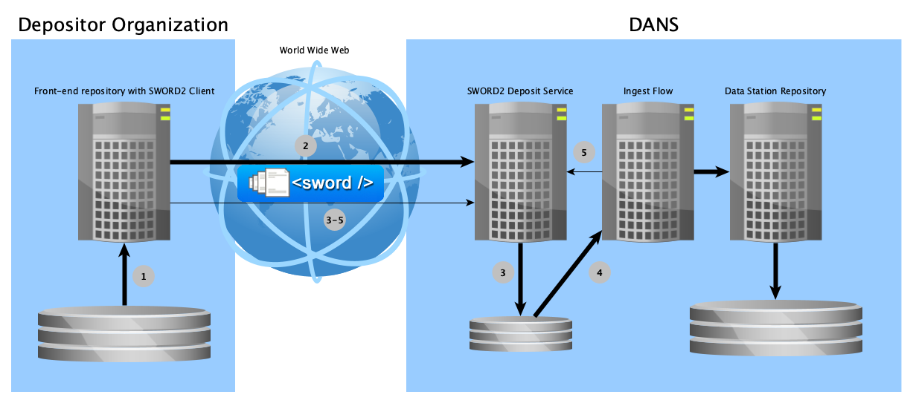

dd-dans-sword2-examples¶
Examples for creating a SWORD2 Java client to deposit dataset to a DANS Data Station
SYNOPSIS¶
mvn clean install
./run-deposit.sh Simple https://demo.<DS>.datastations.nl/sword2/collection/1 myuser mypassword bag
./run-deposit.sh Continued https://demo.<DS>.datastations.nl/sword2/collection/1 myuser mypassword chunksize bag
./run-deposit.sh SequenceSimple https://demo.<DS>.datastations.nl/sword2/collection/1 myuser mypassword bag1 bag2 bag3
./run-deposit.sh SequenceContinued https://demo.<DS>.datastations.nl/sword2/collection/1 myuser mypassword chunksize bag1 bag2 bag3
./run-validation
DESCRIPTION¶
This project contains two important resources for developers who are tasked with the creation of maintenance of a SWORD2 client that deposits datasets to one of the DANS Data Stations (or the DANS Vault Service):
- Java client code
- Examples of bags that conform to the DANS BagIt Profile v1 requirements (and—for illustration—some that violate some of the requirements).
Looking for legacy EASY2 examples?
This project contains examples for the SWORD2 interface of the new DANS Data Stations. For the legacy EASY SWORD2 service see easy-sword2-dans-examples.
SWORD2 in a nutshell¶
Depositing to the DANS Archive via SWORD2 is basically a two-phase process:
- Submitting a deposit for ingest.
- Tracking the state of the deposit as it goes through the ingest-flow, until it reaches PUBLISHED status.
The following diagram details this a bit further.

- Client creates a deposit package (conforming to DANS BagIt Profile v1).
- Client sends deposit package to SWORD2 Service, getting back a URL to track the deposit's state.
- SWORD2 Service unzips and validates deposit.
- Ingest Flow performs checks and transformations and creates a dataset in the Data Station Repository.
- Ingest Flow reports back success or failure to SWORD2 Service.
3-5. During this time the Client periodically checks the deposit state through the URL received in step 2.
If the final state of PUBLISHED is reached, the process is concluded successfully. At this point the deposit has created a new dataset (version) in the Data
Station repository. Other outcomes may be INVALID (the bag was invalid according to the BagIt specs) or REJECTED (the additional
requirements of DANS BagIt Profile v1 were not met). In case the server encountered an unknown error FAILED will be returned.
DD SWORD2 service description
More detailed information about the SWORD2 can be found on its manual page.
Getting started¶
The following is a step-by-step instruction on how to run a simple example using the Data Station's demo server.
Getting access to the demo server¶
Agreement
Before you can get access to the demo server, there must be a formal agreement between your organization and DANS. The following assumes that this agreement is in place. If it is not, please contact the Data Station Manager of the Data Station that you want to deposit to.
- From your Data Station Manager at DANS request access to the demo Data Station server. The Data Station Manager will provide the information necessary to connect.
- Create an account in the demo Data Station.
- From your Data Station Manager at DANS request the account to be enabled for SWORD2 deposits.
Configuring which notifications to receive
The Data Station repository (Dataverse) generates notifications for many events. Most of these can be muted. Log in via the user interface and open the account menu on the top right. Click on the Notifications item. The Notifications tab of your Account page will now be opened. Expand the header Notification settings and uncheck the notification types you do not wish to receive.
Depositing your first dataset¶
Running the SimpleDeposit example¶
-
Clone and build this project:
git clone https://github.com/DANS-KNAW/dd-dans-sword2-examples cd dd-dans-sword2-examples mvn clean install -
Execute the following command from the base directory of you clone of this project:
./run.sh Simple https://demo.<DS>.datastations.nl/sword2/collection/1 <user> <password> <bag>Fill in:
- for
<DS>the name of the Data Station that you are depositing to, e.g.,archaeology; - for
<user>your Data Station account name; - for
<password>the password of your Data Station account; - for
<bag>: any of the bags insrc/main/resources/example-bags.
- for
Output analysis¶
In the introduction the SWORD2 deposit process is described in 5 stages, the response messages give some indication how far along the process is. The output will take the following form, starting with the part of the response representing step 2. The UUID will of course be different.
SUCCESS. Deposit receipt follows:
<entry xmlns="http://www.w3.org/2005/Atom">
<generator uri="http://www.swordapp.org/" version="2.0" />
<id>https://demo.<DS>.datastations.nl/sword2/container/a5bb644a-78a3-47ae-907a-0bdf162a0cd4</id>
<link href="https://demo.<DS>.datastations.nl/sword2/container/a5bb644a-78a3-47ae-907a-0bdf162a0cd4" rel="edit" />
<link href="https://demo.<DS>.datastations.nl/sword2/container/a5bb644a-78a3-47ae-907a-0bdf162a0cd4" rel="http://purl.org/net/sword/terms/add" />
<link href="https://demo.<DS>.datastations.nl/sword2/media/a5bb644a-78a3-47ae-907a-0bdf162a0cd4" rel="edit-media" />
<packaging xmlns="http://purl.org/net/sword/terms/">http://purl.org/net/sword/package/BagIt</packaging>
<link href="https://demo.<DS>.datastations.nl/sword2/statement/a5bb644a-78a3-47ae-907a-0bdf162a0cd4" rel="http://purl.org/net/sword/terms/statement" type="application/atom+xml; type=feed" />
<treatment xmlns="http://purl.org/net/sword/terms/">[1] unpacking [2] verifying integrity [3] storing persistently</treatment>
<verboseDescription xmlns="http://purl.org/net/sword/terms/">received successfully: bag.zip; MD5: 494dd614e36edf5c929403ed7625b157</verboseDescription>
</entry>
Retrieving Statement IRI (Stat-IRI) from deposit receipt ...
Stat-IRI = https://demo.<DS>.datastations.nl/sword2/statement/a5bb644a-78a3-47ae-907a-0bdf162a0cd4
As the deposit is being processed by the server the client polls the Stat-IRI to track the status of the deposit. During this stage steps 3 and 4 are performed.
Start polling Stat-IRI for the current status of the deposit, waiting 10 seconds before every request ...
Checking deposit status ... SUBMITTED
Checking deposit status ... SUBMITTED
Checking deposit status ... SUBMITTED
Checking deposit status ... SUBMITTED
The 5th and final step of the process is represented by the following response messaging.
Checking deposit status ... PUBLISHED
SUCCESS.
Deposit has been archived at: <urn:uuid:a5bb644a-78a3-47ae-907a-0bdf162a0cd4>. With DOI: [10.17026/test-Lwgy-zrn-jfyy]. Dataset landing page will be located at: <https://demo.<DS>.datastations.nl/ui/datasets/id/easy-dataset:24>.
Complete statement follows:
<feed xmlns="http://www.w3.org/2005/Atom">
<id>https://demo.<DS>.datastations.nl/sword2/statement/a5bb644a-78a3-47ae-907a-0bdf162a0cd4</id>
<link href="https://demo.<DS>.datastations.nl/sword2/statement/a5bb644a-78a3-47ae-907a-0bdf162a0cd4" rel="self" />
<title type="text">Deposit a5bb644a-78a3-47ae-907a-0bdf162a0cd4</title>
<author>
<name>DANS-EASY</name>
</author>
<updated>2019-05-23T14:51:15.356Z</updated>
<category term="PUBLISHED" scheme="http://purl.org/net/sword/terms/state" label="State">http://demo.easy.dans.knaw.nl/ui/datasets/id/easy-dataset:24</category>
<entry>
<content type="multipart/related" src="urn:uuid:a5bb644a-78a3-47ae-907a-0bdf162a0cd4" />
<id>urn:uuid:a5bb644a-78a3-47ae-907a-0bdf162a0cd4</id>
<title type="text">Resource urn:uuid:a5bb644a-78a3-47ae-907a-0bdf162a0cd4</title>
<summary type="text">Resource Part</summary>
<updated>2019-05-23T14:51:22.342Z</updated>
<link href="https://doi.org/10.5072/dans-Lwgy-zrn-jfyy" rel="self" />
</entry>
</feed>
Statuses¶
The deposit will go through a number of statuses.
| State | Description |
|---|---|
DRAFT |
The deposit is being prepared by the depositor. It is not submitted to the archive yet and still open for additional data. |
UPLOADED |
The deposit is in the process of being submitted. It is waiting to be finalized. The data is completely uploaded. It will automatically move to the next stage and the status will be updated accordingly. |
FINALIZING |
The deposit is in the process of being submitted. It is being checked for validity. It will automatically move to the next stage and the status will be updated accordingly. |
INVALID |
The deposit is not accepted by the archive as the submitted bag is not valid. The description will detail what part of the bag is not according to specifications. The depositor is asked to fix the bag and resubmit the deposit. |
SUBMITTED |
The deposit is submitted for processing. dd-sword2 will not update it anymore and limit itself to providing a Statement document on request. |
FAILED |
An error occurred while processing the deposit |
REJECTED |
The deposit does not meet the requirements of DANS BagIt Profile v1. The description will detail what part of the deposit is not according to specifications. The depositor is requested to fix and resubmit the deposit. |
PUBLISHED |
The deposit is successfully published in the Data Station repository. |
If an error occurs the deposit will end up INVALID, REJECTED (client error) or FAILED (server error). The text of the category element will contain details
about the error.
What happened to ARCHIVED?
In easy-sword2-dans-examples the final state was called ARCHIVED. In the Data Station Architecture, however, the
deposit is not archived until an archival copy has been created in the DANS Data Vault (the tape archive). It is possible to verify that the archival copy
has been created by dereferencing the URN:NBN identifier returned in the SWORD Statement. This will return a catalog page detailing the archival copies
stored for the dataset identifier by the URN:NBN. While it is certainly possible to include this stage in the process, it is not necessary, as DANS
takes custody of the data as soon as it has been published in the Data Station repository.
(Also note that at time of writing—October 2022—the DANS Data Vault is not yet operational.)
Next steps¶
Studying the example bags¶
After successfully depositing the first example to the demo repository you can start thinking about how to design your SWORD2 client. Depending on your source repository system this make take various shapes. In any case your code will need to assemble a bag conforming to DANS BagIt Profile v1. Some examples of such bags are included in the resources directory of this project.
Finding libraries and tools¶
- bagit-java—a Java library for working with bags. This is a DANS fork of a project started by Library of Congress, which is no longer maintained by them.
- bagit-python—a Python library and command line tool for working with bags, also by Library of Congress. This is still maintained by them.
brew install bagitis still available on MacOS to install an older version of bagit-java which contained a powerful command line interface, but is no longer maintained.- xmllint—a tool to check that XML files conform to a given XML schema.
Abdera project retired
easy-sword2-dans-examples used the Apache Abdera library to parse Atom Entry and Feed documents. The current example code has moved away from using this project, because it is has been retired for ten years now. Instead, generic XPath is used to obtain the relevant parts of the XML documents sent by the server.
End-point for DANS BagIt Profile validation¶
All bags that are deposited to a Data Station are validated by dd-validate-dans-bag to see if they conform to DANS BagIt Profile v1. To facilitate faster development in the demo environment this service can be invoked directly.
Testing different scenarios¶
This project contains 4 Java example programs which can be used as a guide to writing a custom client to deposit datasets using the SWORD2
protocol. The examples take one or more bags as input parameters. These bags may be directories or ZIP files. The code copies each bag to the target-folder of
the project, zips it (if necessary) and sends it to the specified SWORD2 service. The copying step has been built in because in some examples the bag must be
modified before it is sent.
SimpleDeposit.javasends a zipped dataset in a single chunk and reports on the status.ContinuedDeposit.javasends a zipped bag in chunks of configurable size and reports on the status.SequenceSimpleDeposit.javacalls the SimpleDeposit class multiple times to send multiple bags belonging to a sequence.SequenceContinuedDeposit.javacalls the ContinuedDeposit class multiple times to send multiple bags belonging to a sequence.
The Common.java class contains elements which are used by all the other classes. This would include parsing, zipping and sending of files.
The project directory contains a run.sh script that can be used to invoke the Java programs. For example:
mvn clean install # Only necessary if the code was not previously built.
./run-deposit.sh Simple https://demo.<DS>.datastations.nl/sword2/collection/1 myuser mypassword bag
./run-deposit.sh Continued https://demo.<DS>.datastations.nl/sword2/collection/1 myuser mypassword chunksize bag
./run-deposit.sh SequenceSimple https://demo.<DS>.datastations.nl/sword2/collection/1 myuser mypassword bag1 bag2 bag3
./run-deposit.sh SequenceContinued https://demo.<DS>.datastations.nl/sword2/collection/1 myuser mypassword chunksize bag1 bag2 bag3
EXAMPLES¶
- Java Example programs.
- Example bags can be found in the resources directory.
BUILDING FROM SOURCE¶
Prerequisites:
- Java 11 or higher
- Maven 3.3.3 or higher
Steps:
git clone https://github.com/DANS-KNAW/dd-dans-sword2-examples.git
cd dd-dans-sword2-examples
mvn clean install